将 SysConfig 与 MSPM0 配合使用¶
1. 引言¶
本指南说明了如何安装 SysConfig 并开始将其与 MSPM0 配合使用。
1.1. SysConfig 说明和建议使用方式¶
SysConfig 工具作为独立安装程序交付并集成在 CCS 中，可将其手动集成到 IAR 和 Keil，也可通过 dev.ti.com 云工具门户使用。
2. 下载和安装 MSPM0 SysConfig¶
使用独立版 SysConfig 安装程序时需遵循以下说明，IAR、Keil 或其他 IDE 当前需要此安装程序。除 CCS 以外的 IDE 可在其应用程序中使用此 SysConfig 版本，或仅使用它生成的文件。在开始使用 MSPM0 SysConfig 部分中提供了在 CCS 中集成此版本的额外步骤。
下载 SysConfig (TI.com)
安装 SysConfig
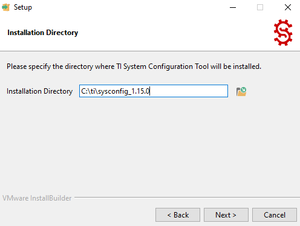
3. 开始使用 MSPM0 SysConfig¶
本部分说明了如何在各个 IDE 中集成和使用独立版 SysConfig 以及如何打开工程。
3.1 开始使用 CCS¶
要在 CCS 中集成独立版 SysConfig 并成功编译示例，需遵循以下说明。
3.1.1 在 CCS 中启用 SysConfig¶
CCS 12.7.0 和 CCS Theia 1.3.1+ 包含与 MSPM0 兼容的 SysConfig 版本，因此无需任何额外步骤即可使用。以下步骤仅在集成独立版 SysConfig 时适用（例如升级 SysConfig 版本时）。
- 请遵循适用于 CCS Theia 的 MSPM0 SDK 快速入门指南中的说明，为 MSPM0 安装 CCS Theia。或者，遵循适用于 CCS 的 MSPM0 SDK 快速入门指南中的说明，为 MSPM0 安装 CCS。
更新 CCS 工具路径。操作方式是，依次点击 Window→Preferences，然后在弹出窗口中选择 Code Composer Studio→Products，在安装后刷新，产品随即应显示在 SysConfig 下方。点击“Apply and Close”使更改生效。
3.1.2 使用 CCS 导入 MSPM0 SysConfig 工程¶
- 请遵循适用于 CCS Theia 的 MSPM0 SDK 快速入门指南中的说明，安装 MSPM0 SDK 并在 CCS Theia 中导入示例。或者，遵循适用于 CCS 的 MSPM0 SDK 快速入门指南中的说明，安装 MSPM0 SDK 并在 CCS 中导入示例。有关具有 SysConfig 支持的示例的完整列表，请参阅 MSPM0 SDK 示例指南。要使用空示例，请选择“empty”示例。
- 查看工程使用的 SysConfig 版本。建议使用此步骤确认工程已找到正确的独立版本，但可跳过此步骤。2.1. 打开 Project Settings→CCS General→Products，确认 SysConfig 版本是所需版本。如果不是，请选择“SysConfig”并点击 Edit。
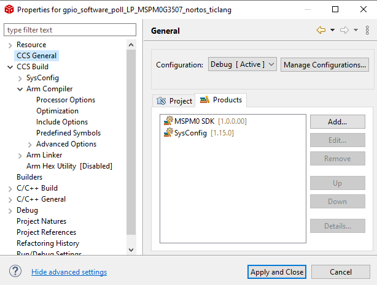 2.2. 将显示一个窗口供选择产品版本。点击 Preferences。

2.3. 确认 SysConfig 路径指向新的独立版本。可能需要刷新才能显示。如果未显示，请检查 SysConfig 的路径和安装
- 编译代码示例。成功编译后，双击 .syscfg 文件开始使用 SysConfig。
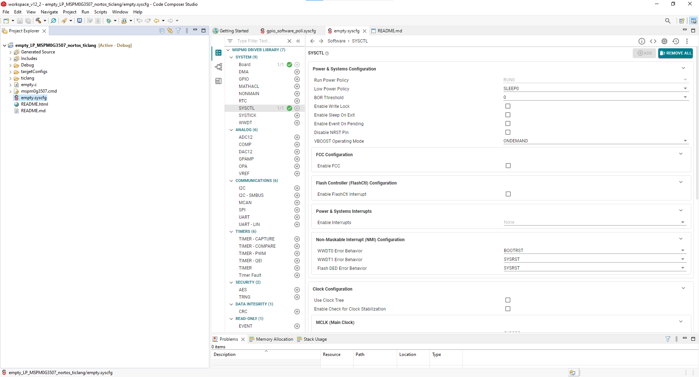
3.2 开始使用 IAR¶
在 IAR 中启动 SysConfig 工程的最佳方式是从 SDK 将其导入；不过在首次启动时，需执行一些步骤以在 IAR 中初始化 SysConfig。
3.2.1 在 IAR 中启用 SysConfig¶
请遵循适用于 IAR 的 MSPM0 SDK 快速入门指南中的说明安装 MSPM0 SDK。
在 IAR 中，从菜单中依次选择 Tools → Configure Viewers。

点击 Import

导航至 SDK 文件夹中的
<MSPM0_SDK_INSTALL_DIR>/tools/iar/，然后打开 sysconfig_iar_setup.xml。
- 独立版 SysConfig 将与 .syscfg 文件关联。点击“OK”关闭窗口。

依次选择 Tools → Configure Custom Argument Variables。

如果未显示 MSPM0_SDK 变量，请确保按照适用于 IAR 的 MSPM0 SDK 快速入门指南中的说明执行此步骤，如下所述。
7.1. 在 IAR 中，依次点击 Tools → Configure Custom Argument Variables
7.2. 点击 Global 选项卡，然后点击 Import
7.3. 导航至 SDK 文件夹中的
<MSPM0_SDK_INSTALL_DIR>/tools/iar/，然后打开 MSPM0_SDK.custom_argvars。7.4. SDK 变量现在应已安装在 IAR 中。单击 OK 关闭窗口。
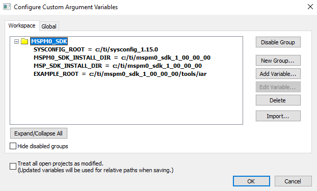 如果 SYSCONFIG_ROOT 变量未指向下载和安装 MSPM0 SysConfig 部分中所述的正确 SysConfig 安装路径，请按如下所示编辑变量：
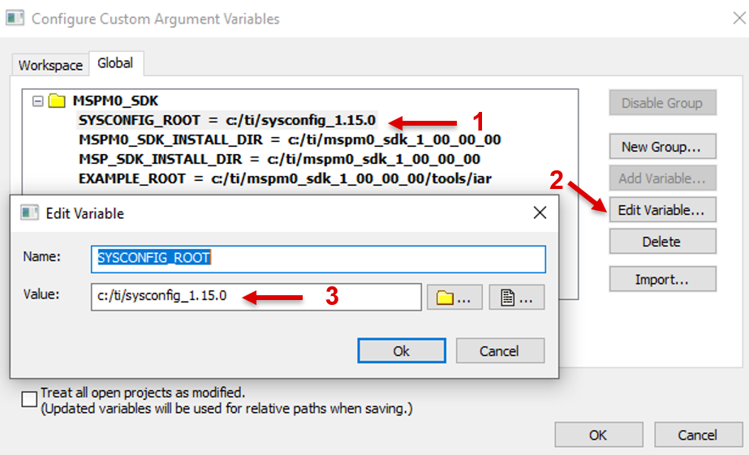
3.2.2 使用 IAR 导入 MSPM0 SysConfig 工程¶
按照以下步骤在 IAR 中导入和使用 SysConfig 工程。
- 按照适用于 IAR 的 MSPM0 SDK 快速入门指南中的说明，将已启用 SysConfig 支持的代码示例导入工作区。有关具有 SysConfig 支持的示例的完整列表，请参阅 MSPM0 SDK 示例指南。要使用空示例，请选择“empty”示例。
双击工程中的 *.syscfg 文件。
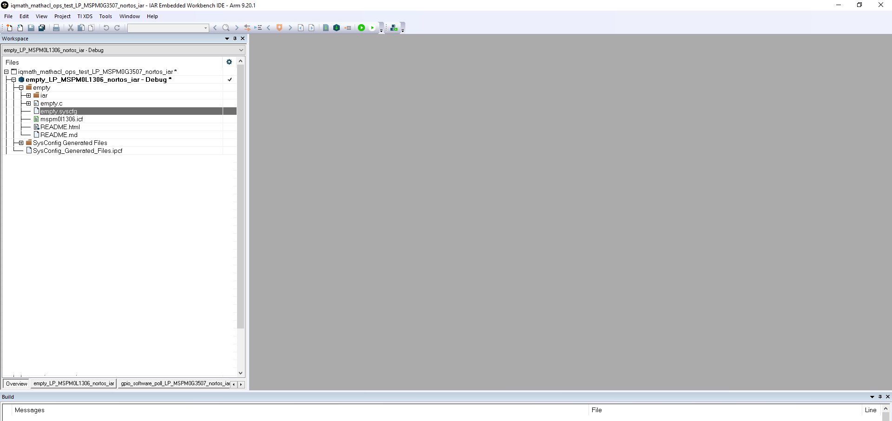 随即将打开 SysConfig，从中可配置外设、IO 引脚和其他设置。

保存所做更改，并切换回 IAR EWARM。
编译代码示例。
3.3 开始使用 Keil¶
在 Keil 中启动 SysConfig 工程的最佳方式是从 SDK 将其导入；不过在首次启动时，需执行一些步骤以在 Keil 中初始化 SysConfig。
3.3.1 在 Keil 中启用 SysConfig¶
请遵循适用于 Keil 的 MSPM0 SDK 快速入门指南中的说明安装 MSPM0 SDK。
导航至 SDK 文件夹中的
<MSPM0_SDK_INSTALL_DIR>/tools/keil/，然后打开syscfg.bat进行编辑（不是执行）。修改下面以红色显示的 SYSCFG_PATH，以匹配在下载和安装 MSPM0 SysConfig部分中选择的独立版 SysConfig 路径。
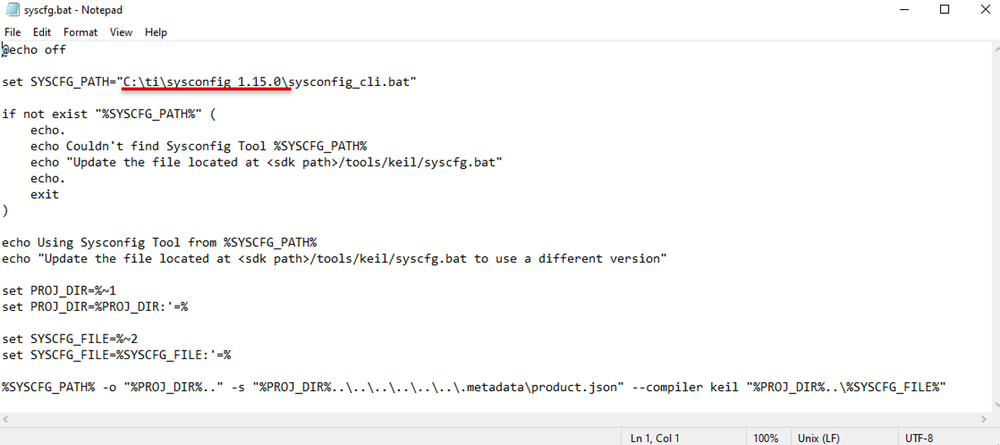 在同一文件夹中，打开
<MSPM0_SDK_INSTALL_DIR/tools/keil/MSPM0_SDK_syscfg_menu_import.cfg进行编辑。修改 SysConfig 和 SDK 版本与路径。
SysConfig 版本和路径以红色突出显示，应匹配在下载和安装 MSPM0 SysConfig 部分中选择的版本和路径。
SDK 版本和路径以蓝色突出显示，并与
MSPM0_SDK_INSTALL_DIR对应。
在 Keil uVision 中，从菜单中依次选择 Tools → Customize Tools Menu。

点击 Import

导航至 SDK 文件夹中的
<MSPM0_SDK_INSTALL_DIR>/tools/keil/，然后打开 MSPM0_SDK_syscfg_menu_import.cfg。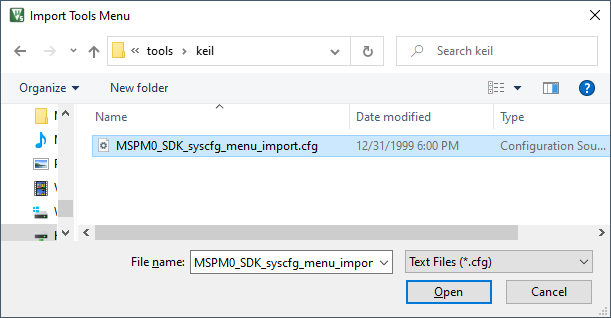 点击“OK”关闭窗口。

“Tool”现在将显示在菜单中。使用它打开 GUI，如下一部分所述。
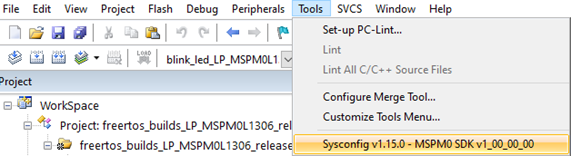
3.3.2 使用 Keil 导入 MSPM0 SysConfig 工程¶
按照以下步骤在 Keil 中导入和使用 SysConfig 工程。
- 按照适用于 Keil 的 MSPM0 SDK 快速入门指南中的说明，将已启用 SysConfig 支持的代码示例导入工作区。有关具有 SysConfig 支持的示例的完整列表，请参阅 MSPM0 SDK 示例指南。要使用空示例，请选择“empty”示例。
双击工程中的 *.syscfg 文件。
在查看器中打开 *.syscfg 文件后，点击 Tools，选择在在 Keil 中启用 SysConfig 部分中配置的工具。

- 随即将打开 SysConfig，从中可配置外设、IO 引脚和其他设置。请注意，此方法仅允许一次打开一个 SysConfig GUI。

保存所做更改，并切换回 Keil uVision。
编译代码示例。
3.4 在没有 IDE 的情况下开始使用¶
以下步骤说明了如何在没有 IDE 的情况下使用 MSPM0 启动 SysConfig 工程。独立版本可用于生成代码和评估器件特性，但不能运行示例。
运行 SysConfig 独立版本
SysConfig 1.20.x 包含对 MSPM0 的支持并支持 M0 SDK：

选择 MSPM0 SDK 产品和器件。
3.1. 选择预先选择了器件和封装的电路板。

3.2. 或者选择器件和封装。

开始使用 SysConfig

4. 将 SysConfig 与 MSPM0 SDK 配合使用¶
此部分说明了在针对 MSPM0 进行开发时，SysConfig 的一些实用功能。
4.1 SysConfig 软件模块¶
4.1.1 软件模块列表¶
4.1.2 模块说明¶
4.1.3 添加软件模块¶
可以按如下所示添加模块。请注意，SysConfig 将仅添加所选器件支持的多个实例。

添加模块将自动隐藏其说明；不过，可点击以下所示图标再次打开说明：

4.1.4 软件模块的组件¶
软件模块的功能有所不同，但通常包括以下部分：
- Name：模块实例的自定义名称。默认情况下，名称从数字后缀“0”开始；不过，开发人员可自定义名称以反映模块用途（例如，将 GPIO 命名为“LED_ERROR”，或将计时器命名为“TIMER_HEARTBEAT”）。请注意，下面显示了模块选择的实际外设（如“TIMA0”）。
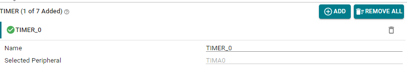 - Quick Profiles：模块的一些常用配置的简短列表。除了可用于快速配置模块以外，这些配置还可用作指南以观察应对每个配置自定义哪些参数。请注意，修改任何参数后，配置文件将默认为“Custom”。

- Basic Configuration：用于访问模块中最常用的设置和特性。默认情况下，此部分处于展开状态。

- Advanced Configuration：用于访问模块中不太常用、但仍有用的设置和特性。默认情况下，此部分处于折叠状态。
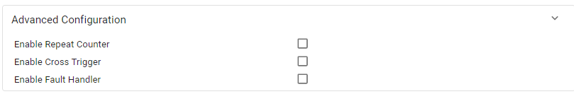 - Interrupts Configuration：选择为模块启用或禁用哪些中断。默认情况下，此部分处于折叠状态。
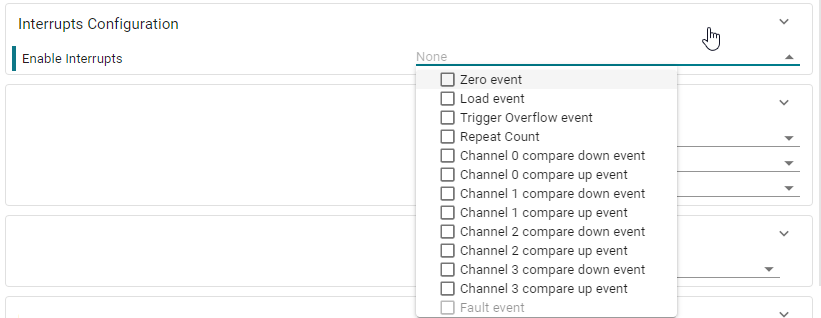 -
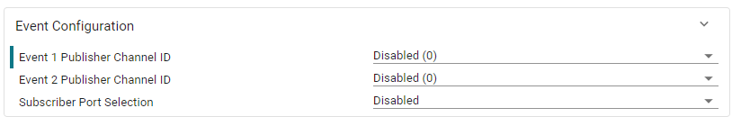 - PinMux - Peripheral and Pin Configuration：配置模块使用的硬件外设和引脚。 有关硬件选择的详细信息，请参阅 PinMux 配置部分。
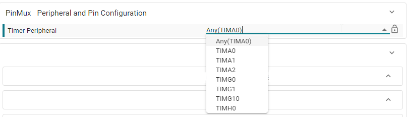 - Other Dependencies：用于快速访问模块使用的其他依赖项。
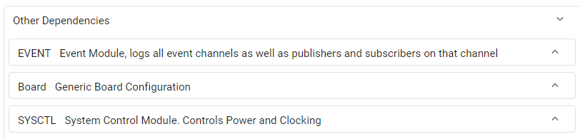
4.1.5 参数的详细说明¶
4.2 时钟树¶
时钟树特性允许用户以图形方式配置器件时钟，而非使用 SYSCTL 菜单。 时钟树特性可通过点击 SysConfig 左上角旁的信号图标找到。此页面在 MSPM0G3507 上打开， 请注意其顶部突出显示的图标。
注意：根据 SDK 版本，模块和视图可能有所不同。

要启用时钟树，仅需添加 SYSCTL 模块并点击“Use Clock Tree”，如下所示。这将从时钟树而非 SYSCTL 模块获得代码生成和所有函数。

4.2.1 配色方案和图例¶
在 SysConfig 中，有不同的颜色和形状表示时钟树的不同状态。时钟树中的不同元素可以有三种可能状态和颜色。其中包括：
活动（蓝色）：此元素正在使用中，并且在至少一个输入中具有非零信号
未使用（浅灰色）：当前视图未使用此元素，但在至少一个输入（即使其未输出）中具有非零时钟信号
关闭（深灰色）：此元素在任何用途的输入中均没有非零时钟信号。
“使用中”概念描述的是没有任何输出显示在图中的一个或多个元素的信号链中的元素。
下图显示了 SYSPLL 分组和输出到 MCLK 的通道 SYSPLL0。 因此，到 MCLK 的路径处于活动状态，而其他通道为浅灰色，即未使用。


此外，M0 器件当前在时钟树中有两个单独视图。一个是配置内部信号的基本视图，另一个是可以发送信号频率时钟计数器 （FCC）的外部/FCC 视图。可以在右上窗格点击切换这两种视图，如下所示。
4.2.2 编辑时钟树的不同组件¶
可以点击编辑时钟树的各个组件。 时钟树有若干种不同类型的组件。要详细了解某个组件，可点击此组件查看可用的可配置项。主要类别如下：
乘法器/除法器：它们是信号路径中的算数组件。要进行调整，可点击下拉菜单并选择正确数字。
频率标记：这些一般标记信号可反映线路上的频率以轻松确定信号的当前状态。
FCC：频率时钟计数器以单个框表示，可在外部视图窗口中点击此框以启用和配置频率时钟计数器。
门：门是信号经过的较小矩形块。有些门是固定的，而有些门可通过切换内部的复选框来启用/禁用。
多路复用器：可点击多路复用器内的按钮来调整多路复用器，以选择要输出的源信号。
引脚功能：引脚功能是上面带“X”的较小框，它们均与 PinMux 中的资源对应。要启用引脚功能，可点击此功能，然后在说明中点击“Enable”。这也会将器件添加至 PinMux 数据。可能还有其他可配置项，例如 HFXT，其中需要输入频率才能知道其他频率。
注意：仅仅因为 CLKOUT 显示为启用，并不表示此代码已生成。必须点击并启用它。
振荡器：SYSOSC 和 LFOSC 也显示在器件上，SYSOSC 有一些可配置项和选项，可通过点击振荡器来选中它们。
4.2.3 摘要视图¶
时钟树还包含摘要窗格视图，从右上角选择后，它位于屏幕最右侧。它可用作开发时的快速参考。
4.3 NONMAIN 配置器¶
NONMAIN 配置器是帮助用户配置器件引导例程的 SysConfig 模块。引导配置例程 （BCR） 和引导加载程序 （BSL） 使用的配置数据存储在名为 NONMAIN 的闪存专用区域中，并且配置数据 结构由 32 位 CRC 保护以提高安全性。有关详细信息，请参阅器件 TRM 中的“架构”一章。
有效的器件配置数据和相应的有效 CRC 必须编程到 NONMAIN 中才能引导器件, 否则器件将锁定在不可恢复的状态。
NONMAIN 配置器可基于用户选择的值自动计算 CRC， 从而帮助用户安全配置器件引导例程。可以通过添加 NONMAIN 模块将 NONMAIN 配置器添加至工程，如下所示。
添加 NONMAIN 配置器模块后，SysConfig 将生成两个文件：boot_config.h 和 boot_config.c。

boot_config.h 文件包含各种表示配置数据结构可选选项的枚举、定义和 类型定义。
boot_config.c 文件包含带用户选择的值的配置数据结构。
将这些文件添加到工程并且工程已编译并下载到器件后，更新的引导例程将在下次 BOOTRST 后生效。
请注意，必须使用链接器文件将生成的 NONMAIN 结构置于相应的存储器 位置。MSPM0 SDK 包括对于 TI Arm-Clang、GCC、IAR 和 Keil 显示此功能的链接器文件。
有关如何在工程中使用这些文件的详细信息，请参阅 SDK BSL 示例（bsl_i2c_flash_interface、bsl_uart_flash_interface、secondary_bsl） 和 Driverlib 示例 flashctl_nonmain_memory_write。
4.4 信息、警告和错误¶
此信息消息告知开发人员 DAC 输出将取决于比较器输出，并假定基准电源为 3.3V。
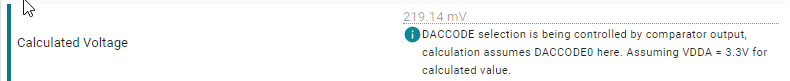 此警告消息表明计算的 UART 波特率与所需目标值不同。根据应用程序所需的容差，这可能没问题，因此可以抑制此警告。

此错误消息表明所选计时器周期在当前配置下无法实现。必须修复此错误才能正确生成代码。
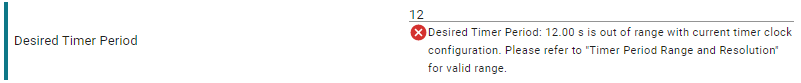
4.5 代码生成¶
可通过点击下面突出显示的图标来显示或隐藏生成的文件。

点击任何文件可在集成编辑器中将其打开。
4.5.1 根据配置观察代码更改¶
SysConfig 可突出显示代码生成中的不同，此特性在修改参数时非常有用。
Unified diff 突出显示同一文件中的最近更改。

Side-by-side diff 并排显示新生成的代码与先前代码。

No diff 仅显示最新生成的代码。
4.6 器件视图¶
4.7 电路板视图¶

4.7.1 自定义电路板配置¶
请遵循这些说明以覆盖或消除电路板限制。
4.8 在器件与封装之间进行切换¶

选择新硬件，并点击 CONFIRM。

4.9 事件配置¶
选择具有事件发布者功能的模块。此示例使用计时器。
转至发布者模块的“Event Configuration”部分。
- 从 1-15 中选择 ID 并选择将发布的事件。以下示例选择了 ID #2 和计时器零事件。
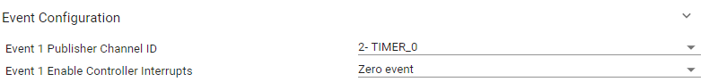 选择具有事件订阅者功能的模块。此示例使用 ADC。
转至订阅者模块的“Event Configuration”部分。
- 选择订阅者事件通道 ID。请注意，SysConfig 将显示已配置的发布者。以下示例显示的计时器 ID 为 #2。
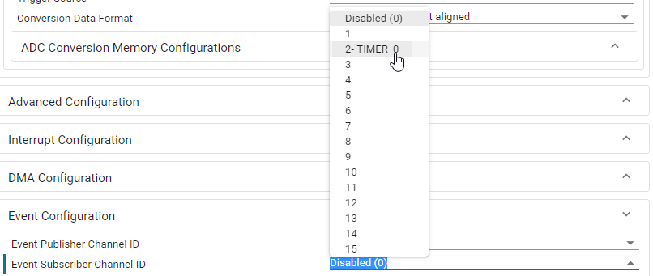 - 打开只读事件模块以查看所有事件。请注意，通道 #2 配置为从计时器触发到 ADC。
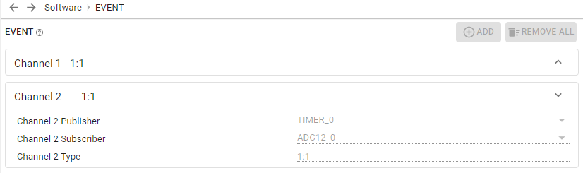 SysConfig 还将生成 Event.dot 文件，它提供事件的图形表示。
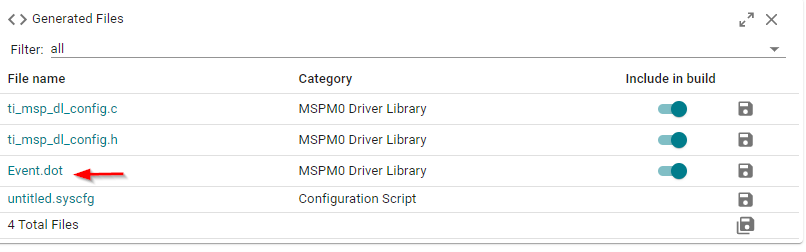 - 将生成的 Events.dot 的内容复制到 .dot 文件查看器，如 GraphvizOnline。观察通道 #2 配置为从计时器触发到 ADC。

某些事件通道支持 2 个订阅者。以下示例显示了将事件触发到 ADC 和 DAC12 订阅者的计时器发布者配置。


4.10 PinMux 配置¶
SysConfig 能够轻松分配外设和器件引脚。
- 具有可分配硬件的所有模块在模块配置面板底部均包含 PinMux 部分。默认情况下，模块分配至 Any，这将允许 SysConfig 选择任何可用外设和引脚。下图显示了 UART 模块的默认分配。
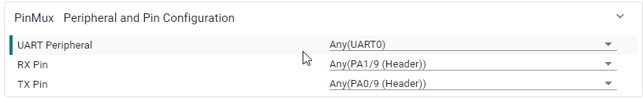 开发人员可选择特定外设或引脚。
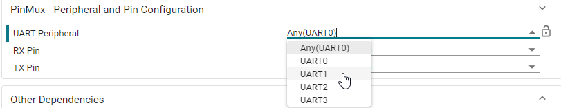 - 请注意，选择外设或引脚将减少其他设置的选项。在以下示例中，只能选择 UART1_RX 引脚，因为选择了外设 UART1。
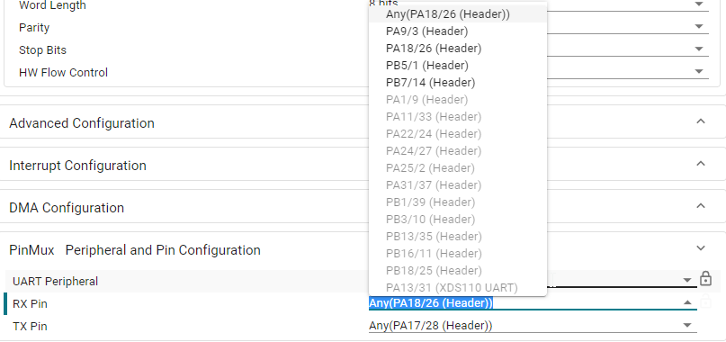 - 如果分配无法实现，则选择外设或引脚可能导致冲突。在以下示例中，PA18 由另一模块使用，因此导致了分配冲突。
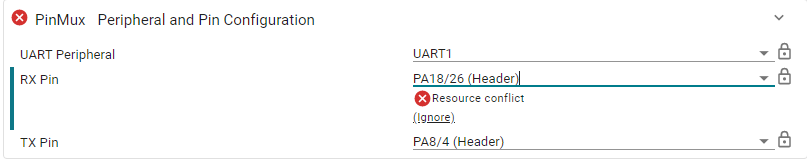
4.11 保留硬件外设¶
4.11.1 “Reserve Peripheral”列表¶
可点击以下所示图标来选择 MSPM0 SDK 的“Reserve Peripheral”列表。
4.11.2 保留外设¶

外设和引脚的分配类似于 PinMux 配置。
4.12 禁用 SysConfig¶
完成应用程序的初始配置后，开发人员可能希望冻结或锁定 SysConfig 生成的文件，避免它们在将来编译中重新生成。
4.12.1 在 CCS 中禁用 SysConfig¶
定位生成的文件¶
生成的文件位于 CCS Project Explorer 中的 Generated Source 文件夹：
这些文件位于 <project>/<build_configuration>/syscfg，可右键点击上面文件夹中的任一文件，并选择 Show in Local Terminal → System Explorer 快速轻松地访问这些文件

复制生成的文件¶
创建一个新文件夹。在下图中显示为
<project>/sysconfig。复制上一步骤所述的
<project>/<build_configuration>/syscfg中生成的源文件。将生成的源文件粘贴到新文件夹。

请注意，文件现在显示在 CCS 中：
禁用 SysConfig¶
修改编译器/链接器设置¶
下图显示了如何添加路径 ${PROJECT_ROOT}/sysconfig 以包括新建文件夹中的头文件。

重新编译工程¶
现在可重新编译工程而不使用 SysConfig。
重新启用 SysConfig¶
将 .syscfg 重新包含至工程。
排除或删除包含先前复制的文件的新文件夹。
删除可能导致文件夹冲突的任何工程设置。
4.12.2 在 IAR 中禁用 SysConfig¶
定位生成的文件¶
生成的文件可能位于 IAR 工作区中的 SysConfig Generated Files 文件夹：

这些文件将位于工程根文件夹。可右键点击上面文件夹中的任一文件，并选择 Open Containing Folder 快速轻松地访问这些文件

禁用 SysConfig¶
在 IAR 中，对 SysConfig 采用“Custom Build”步骤。要使用自定义编译步骤，请依次选择 Project→Options→Custom Build。清除所有在“Custom Tool Configuration”选项卡下填充的字段，如下所示：
重新编译工程¶
现在可在无SysConfig的情况下重新编译工程。
重新启用 SysConfig¶
从以下位置恢复自定义编译设置 Project→Options→Custom Build：
1.1. 文件名扩展名：
.syscfg1.2. 命令行：
$SYSCONFIG_ROOT$/sysconfig_cli.bat -o $PROJ_DIR$ -s "$MSPM0_SDK_INSTALL_DIR$/.metadata/product.json" --compiler iar $FILE_PATH$1.3. 输出文件：
SysConfig_Generated_Files.ipcf
4.13 覆盖 SYSCONFIG_WEAK 函数¶
在某些情况下，覆盖 SysConfig 生成的某些函数，同时仍保持其启用状态 以用于其他函数的配置和代码生成， 这可能非常有用。
这可在适用于 MSPM0-SDK 的 SysConfig 中实现，因为函数声明为 SYSCONFIG_WEAK。
weak 属性导致编译器向符号表发送弱符号 以进行符号声明。在链接时，如果链接中包括 名称相同的符号的强定义，则符号的强定义 将覆盖弱定义。
以下示例显示了 SYSCFG_DL_GPIO_init 的弱定义：

同一函数可在应用程序代码中重新编写而不带有 SYSCONFIG_WEAK 属性，且将优于 SysConfig 生成的函数。
请注意，在以下示例中，SYSCFG_DL_GPIO_init 在 SysConfig 初始化期间仍由 SYSCFG_DL_Init 调用，但它位于应用程序文件 而非 SysConfig 生成的文件中：